Diary
各地のバラを訪ねて
国際バラとガーデニングショー
年に一度、毎年五月に、埼玉県にあるメットライフドームで行われているバラの祭典。2017と2018年に訪れました。残念ながら2018年でこの祭典は終了となりました。
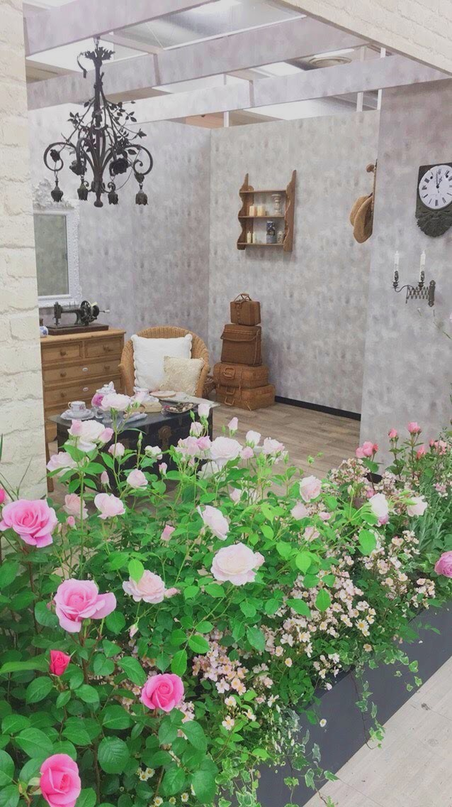
左下にあるバラは、フラゴナールというフランスのバラで、部屋とバラとがうまく調合していました。部屋の一角を再現しており、我が家にも植えているバラであるので、とても参考になりました。
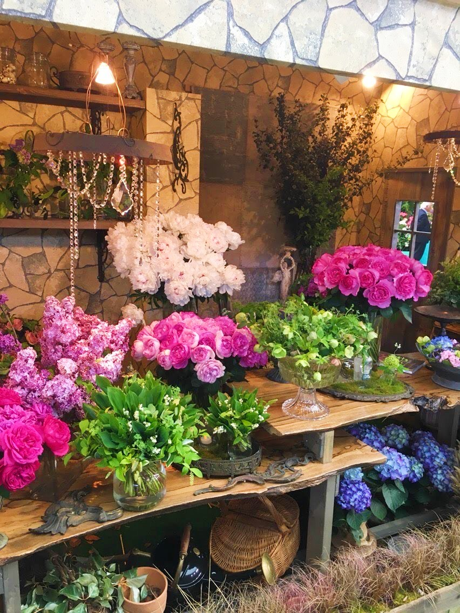少し暗めの壁の色と、明るく華やかなバラが対照的でより美しさを感じることができるスポットでした。どこか、海外の花屋さんを彷彿させる雰囲気がありました。
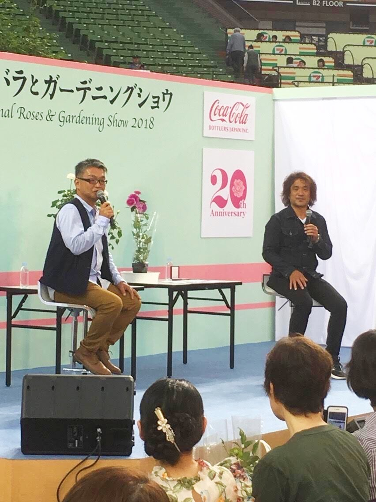小山内健さんと木村卓功さんのトークイベントの模様です。お二方とも他のイベントなどでも何度もお見かけしたことがあり、我が家のバラの相談に良く乗ってくださり、大変お世話になっている方々です。この日のトークイベントでは新しいバラの品種について・また最近のバラの傾向についてのお話でした。とても参考になる話ばかりで、時間が過ぎるのがあっという間でした。
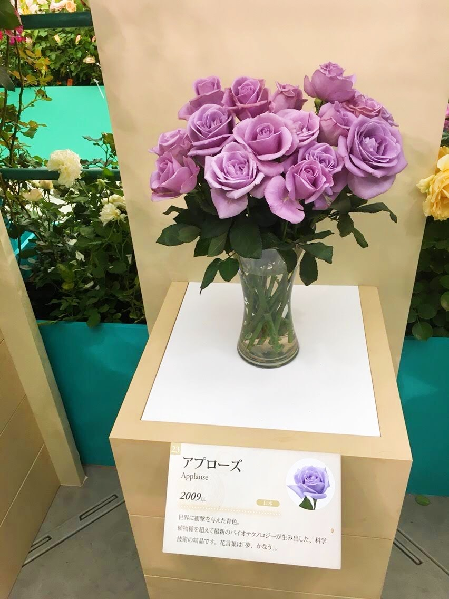アプローズという名前の青色のバラで、非常に貴重なバラです。バラには青い色素がないため、青いバラというものはもともと存在しません。ですがサントリーがこの世で初めて、バイオテクノロジーによって青色のバラを作り出しました。
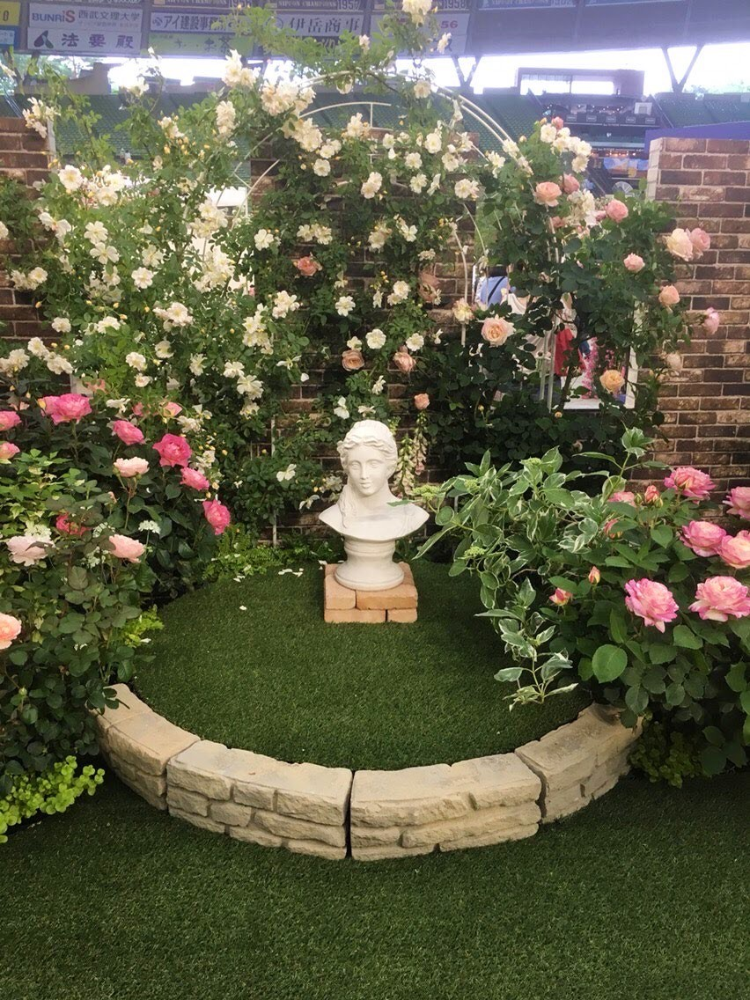とある庭を再現したものであり、狭いスペースに様々なバラが絡み合い、美しさが凝縮されたスポットです。我が家の庭でもこのようにバラを仕立ててみたいと感心しました。
港の見える丘公園
この公園は横浜にあり、5月の春のバラの時期と、10月の秋のバラの時期に訪れます。2018年の春と秋、2019年の春に訪れました。
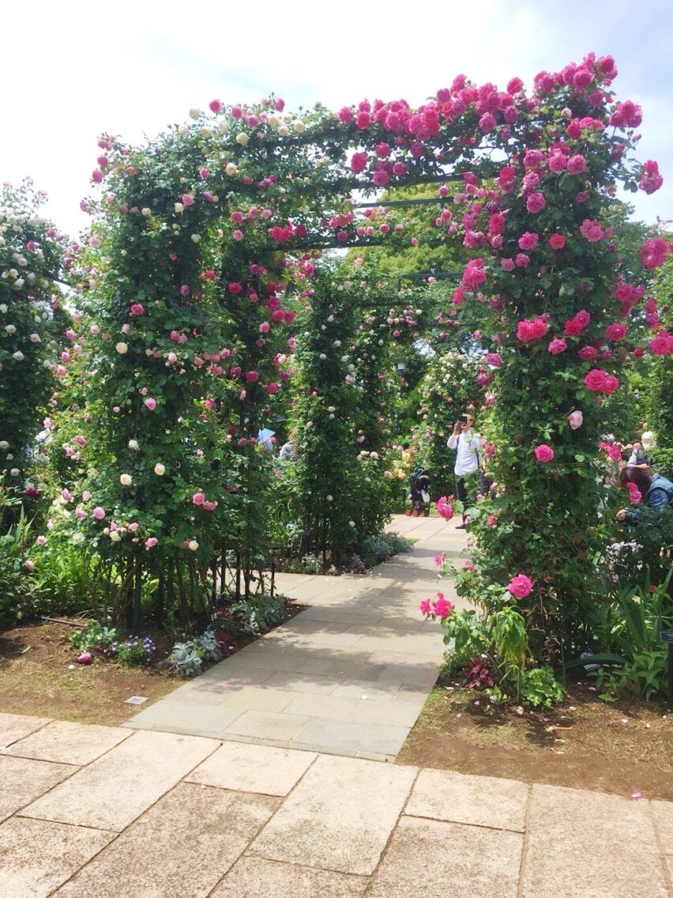
香りがよいバラを集めて作られたアーチです。バラのアーチはつるバラで構成されているので、見頃は春の五月ごろになります。このような広い場所でダイナミックに何本ものアーチで仕立てられている姿は圧巻でした。
山下公園
この公園も横浜にあり、5月の春のバラの時期と、10月の秋のバラの時期に訪れます。2018年の春と秋、2019年の春に訪れました。港の見える丘公園からも歩いていくことができ、横浜の市の花がバラであることが実感できる公園です。
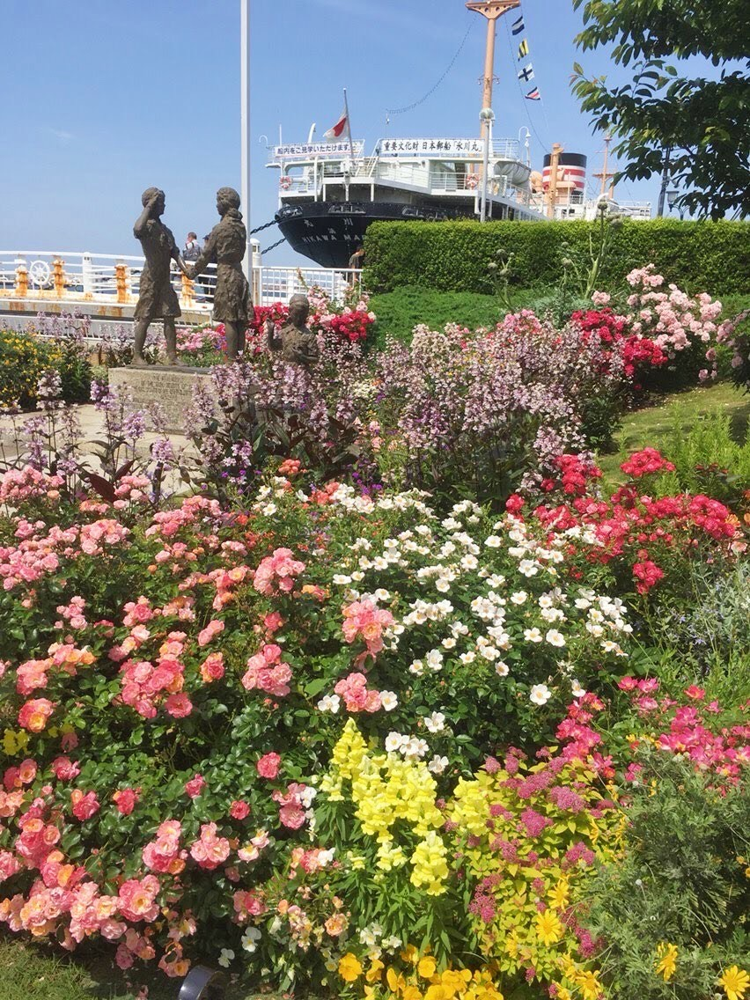
ここは皆さんもよく知っている山下公園の春の様子です。こちらに来て驚かされるのが、足元の花もバラの花であるということです。この辺りはあらゆる種類のバラで埋め尽くされています。
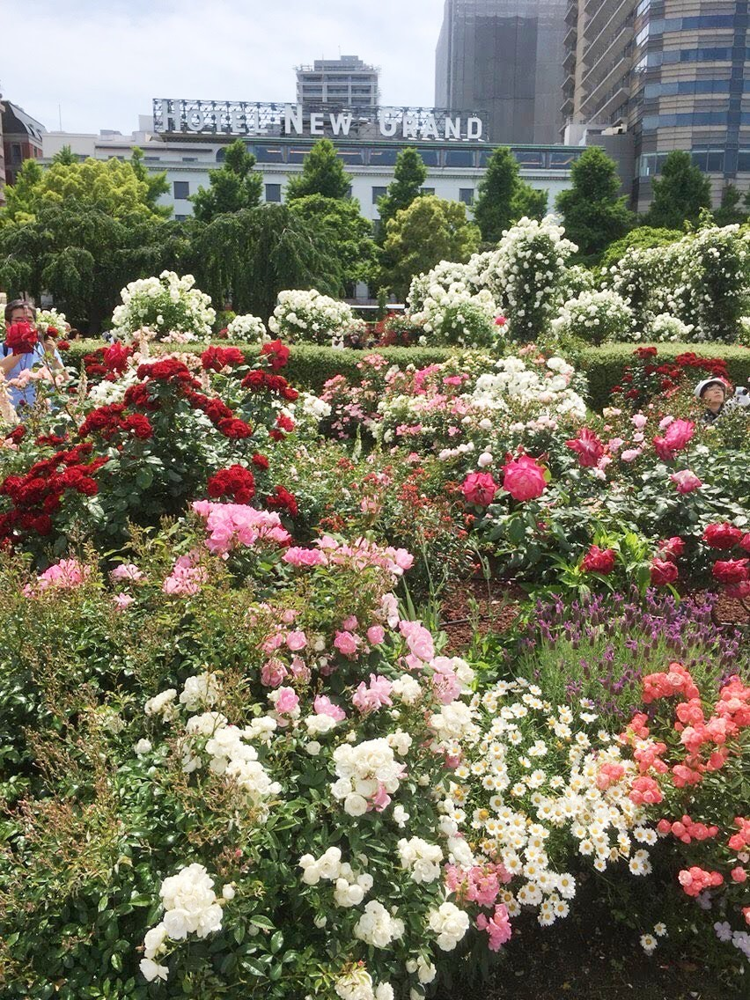ホテルニューグランドの手前にあるバラスポットです。手前に咲いている白いバラはアイスバーグというバラであり、我が家でも植えています。このバラは枝が細く、しなだれるように咲くので、その特性を生かし、高いところまで誘引しうまく見せています。アイスバーグは抜群の四季咲性品種なので、長くの間花を見ることができます。
西武百貨店開催バライベント
2019年の5月に期間限定で池袋の西武百貨店の特設会場で開催されていたイベントです。各ブースごとにテーマが決まっていてバラが美しく飾られていました。
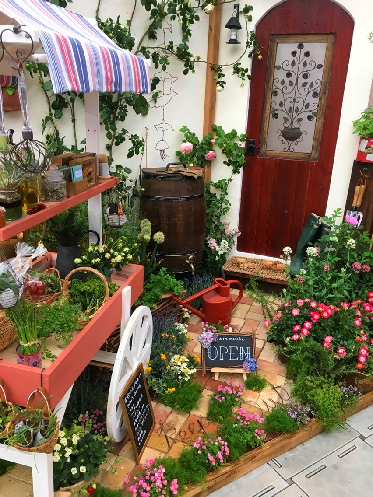
バラと他の花をうまく融合させ、花屋さんをイメージしてつくられた作品です。かわいらしく、白壁にバラを仕立てている点が気に入りました。
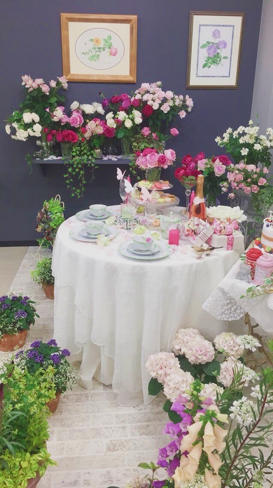テーブルコーディネートが美しく、バラと調和している作品です。家の中に飾る際などにとても参考になりました。
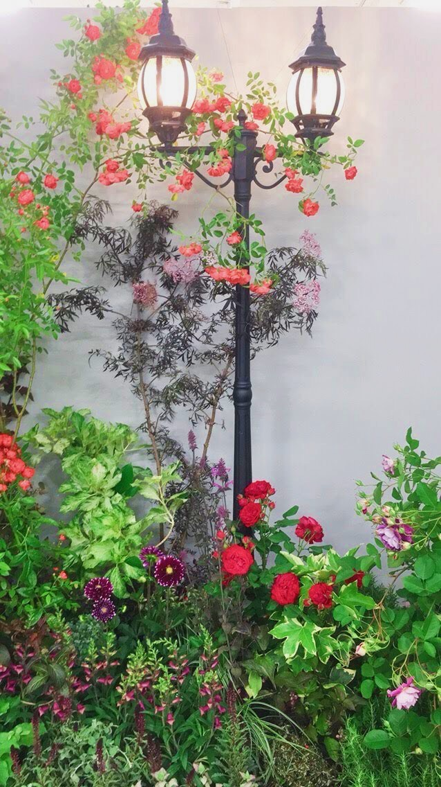街灯にうまくつるバラを絡めている作品です。バラは、つるバラといっても、他のツル性植物と違い自ら絡むことは無いので、人の手によってこのようにうまく誘引しています。海外の街並みの一角を見ているようで旅行した気分になりました。
フレッシュミントから皆さんへ
みなさん。こんにちは！フレッシュミントです。このサイトを観てくださっている方々の中には、ガーデニング初心者の方もいらっしゃると思います。バラを育てることは難しいと一般的に言われていますが、愛情をもって育てれば決してそんなことはありません。慣れてくればどんなバラでもきっと育てることができると思いますが、まずは失敗しないことが大事です。そのためには、病気に強いバラを育ててみると良いでしょう。最近は、無農薬でも育てられる品種も増えてきました。また、少し病気にかかったとしても、強健な品種は枯れずに育ってくれます。そうして慣れてくると、手間がかかる品種のバラにも上手に育てることができます。バラは早朝が一番良く香ります。バラを育てていれば、その素晴らしい香りを楽しむことができます。このような時こそ、育ててよかったと心から感じる瞬間です。あなたのお庭にもバラを植えて香りを楽しみませんか？